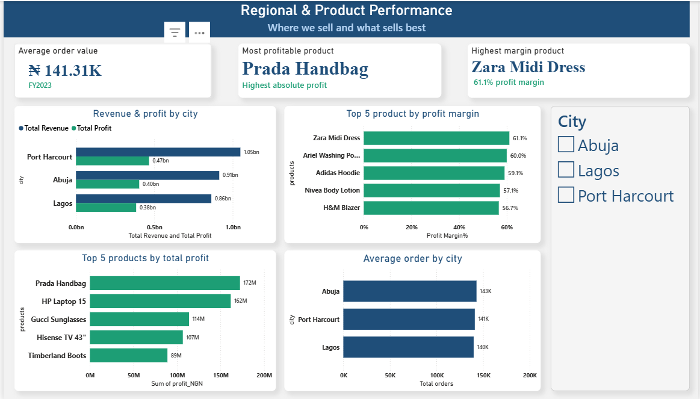

The Revenue Illusion.
The business problem
A growing e-commerce retailer had watched revenue climb 18% year over year — a number that, on its own, looks like a success story. But profit wasn't following at the same pace, and no one could say exactly why: which products, cities or customers were actually driving the business forward, and which were quietly holding it back.
The data
A year of order-level e-commerce data spanning three product categories and three cities, cleaned from real-world issues — missing values, duplicate records, inconsistent formatting — before any analysis began.
What we investigated
Instead of just showing charts, we asked business questions:
- Which product categories are actually driving profit, not just revenue?
- Which cities are the strongest and weakest performers, and why?
- Which products deserve more attention — and which are quietly underperforming?
- Which customers are worth protecting, and which have already started to disengage?
What the analysis revealed
- Electronics generates the highest revenue of any category, but converts it to profit at the lowest margin — 38.1%, versus 52.3% for Fashion on nearly 30% less revenue.
- Port Harcourt leads on order volume, but Lagos and Abuja run at nearly identical margins — meaning there's room to grow profit simply by increasing volume in markets already performing well.
- The Prada Handbag drives the highest absolute profit in the catalog, but the Zara Midi Dress converts most efficiently at a 61.1% margin — while several Electronics products sit at the bottom on margin.
- 39.5% of the customer base is now At Risk or Lost — nearly matching the 36.4% who are Champions or Loyal, meaning retention is roughly as large a factor in future revenue as new customer acquisition.
The dashboards



Recommendation
What the data demonstrates
- Electronics is the volume leader but the weakest margin performer of the three categories.
- Nearly 4 in 10 customers show clear disengagement signals.
- Lagos and Abuja have room to close the order-volume gap with Port Harcourt without a margin penalty.
What BEXIRA recommends the business consider
- Review pricing and supplier cost on the specific low-margin Electronics SKUs identified — not the category broadly.
- Build a win-back offer targeted at the At-Risk segment before those customers convert to Lost.
- Test whether marketing spend could be reallocated toward Lagos and Abuja, given their comparable margins to Port Harcourt.
Business impact
We don't invent financial outcomes that weren't measured. What this analysis points to is a realistic opportunity: correcting even part of the Electronics margin gap, or recovering a share of the At-Risk segment before it lapses, would meaningfully improve profitability — without requiring the business to sell any more than it already does. The opportunity here isn't more revenue. It's keeping more of what's already being earned.
Have a business question hiding in your data?
Start a project